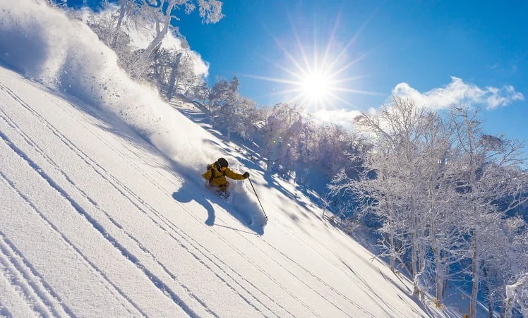
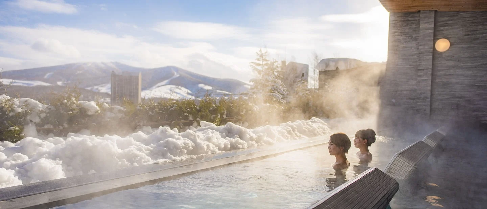

孩子练技术，
家长过冬假。
北海道 8–9 天短版 / 10–14 天长版 · 滑雪 × 温泉
父母滑 2 天，可选第 3 天；其它日子不再陪滑耗全天。
先核课程，再选同区住宿。
短版先比富良野预算 / 留寿都课程主案保留


ONE BASE, THEN TRAVEL
先连续住，
再离开雪场旅行。
短版札幌1晚＋富良野4晚＋札幌2晚，保留3个雪日；12天长版仍可展开温泉与恢复日。
8–9天预算短版优先比较 · 原10–14天长版保留 · 滑雪＋温泉 资料核验：2026-10-26。日本当地时间比北京快 1 小时。方案未预订、未付款；课程余位、指定教练、房间、餐厅与器材库存均未确认。人数、预算、具体出发日、双板/单板与语言需求待定，不默认老人同行。
预算模块：提前出发，缩到8–9天
先按北京出发、2成人＋毛豆（10岁）、1间可住3人的房核算；这是比较假设，不默认老人同行。 价格采集于2026-10-27。酒店使用整段含税列表总价；机票使用3位旅客查询的往返列表合计，不是最终订单报价。未进入选定返程/确认页，返程具体班次、托运行李与最终费用仍未核实。会员/促销价仅对当前页面条件有效；未减积分、返现、未领优惠券。
当前更值得保留8天7晚：1/30—2/6，富良野＋札幌。机票＋酒店样本合计人民币37,917元（约3.8万元），不含课费、雪票雪具、餐饮、地面交通、签证保险与地方附加费。 留寿都课程优势仍保留，但当前度假酒店样本明显更贵，不能再无条件称为预算主案。
时间和请假：先算工作日，不冒充已公布调休
↔ 手机端可在表格内左右滑动查看全部列。
| 窗口 | 时长与骨架 | 日历周一至五 | 仅扣现行法定日期后的估计 |
|---|---|---|---|
| 1/30周六—2/6周六 | 8天7晚；札幌1晚＋富良野4晚＋札幌2晚 | 5天 | 约4天年假，年度调休及公司安排待核 |
| 1/29周五—2/6周六 | 9天8晚；札幌2晚＋富良野4晚＋札幌2晚 | 6天 | 约5天年假，同上；多一天主要用于恢复 |
| 1/23周六—1/30周六 | 提前一周8天7晚；不看2月雪祭 | 5天 | 通常需覆盖5个工作日；不能据此锁定年假 |
| 原1/31—2/11 | 12天11晚，继续作为长版备选 | 9天 | 仅扣2/5、2/8后为7天，年度补休/补班未计 |
除夕2/5、初一2/6；现行法律春节假日含除夕至初三，但本轮没有核实2027年度调休表，不把第三方预测当放假通知。[6][67] 北京市教委义务教育寒假为1/18—2/21，以上都在校历寒假内，仍以毛豆学校通知为准。[68] 雪祭已公布2/4—11，短版尾段可覆盖。[7]
机票：避开“最低价其实跨夜或次日到”的坑
↔ 手机端可在表格内左右滑动查看全部列。
| 北京⇄新千岁窗口 | 三人往返列表合计 | 已读到的去程与取舍 |
|---|---|---|
| 2027-01-30—2027-02-06 | 人民币12,585元 | 国泰；去程 PEK 07:30—CTS 17:50，香港转机，总时长9h20。3位旅客查询的往返列表合计；不是成人单价×3。返程航班、托运和最终税费尚未进入选定返程/确认页核实。 [55] |
| 2027-01-29—2027-02-06 | 人民币11,089元 | 国泰；去程 PEK 03:25—CTS 16:00，香港转机，总时长11h35。红眼出发；3人往返列表合计，返程航班与行李未锁定。不能与8天早班样本视为同等舒适度。 [56] |
| 2027-01-29—2027-02-06 | 人民币9,882元 | 国泰；去程 PEK 03:25—CTS 17:50，总时长13h25。低价代价是凌晨出发＋长中转；不作为主预算。 [56] |
| 2027-01-23—2027-01-30 | 人民币14,622元 | ANA；去程 PEK 08:25—CTS 16:35，东京转机，总时长7h10。提前一周的日间、非大陆航司样本；不证明全市场最低价。更低的4,267元/人样本含国航＋Jin Air联运，不按用户偏好作为首选。 [58] |
| 2027-01-31—2027-02-11 | 人民币14,371元 | 国泰；去程 PEK 03:25—CTS 14:50，香港转机，总时长10h25。红眼出发；原12天方案的机票样本，未凑齐相同住宿组合，不能给出精确机酒节省额。 [57] |
当前这些列表未显示直飞，不据此断言航司整个雪季没有直飞。ANA边栏的“最低价”也不等于已验证的日间、无换机场行程；东京羽田/成田、香港及首尔中转条件须逐段复核。国泰样本符合优先非大陆航司的偏好，但经香港绕行，不能仅按便宜选红眼。
酒店：同一入住人数，明确第三张床，按完整晚数核算
↔ 手机端可在表格内左右滑动查看全部列。
| 日期／酒店 | 房型、床位与整段价格 | 餐食、取消与限制 |
|---|---|---|
| 2027-01-30—2027-01-31 · 札幌格兰 1/30—1/31 | [Grand Classic]Superior Twin Room/3 People Use；2小双人床＋1单人床，禁烟，1晚。人民币1,718元 | 不含早、不退款、线上预付，Silver Tier Deal；含税列表合计。可取消版本1,826元。 [60] |
| 2027-01-31—2027-02-04 · 新富良野王子 1/31—2/4 | Standard Twin Room with Mt.Tokachi View and Sofabed Non smoking；2单人床＋1沙发床，4晚。人民币16,222元 | 2成人＋1名10岁儿童；不含早；12/31前可取消、线上预付。含税列表合计，第三张沙发床铺设和地方附加费须最终确认。含3早餐版本为17,640元，不混用。 [59] |
| 2027-02-04—2027-02-06 · 札幌京王广场 2/4—2/6 | Standard Triple Room；3张单人床，禁烟，2晚。人民币7,392元 | 不含早；2/2前可取消、线上预付、33% Special Discount；含税列表合计。含3早餐版本8,158元。排除下方Select multiple rooms区不满足全组的单房价。 [62] |
| 2027-01-29—2027-01-31 · 札幌格兰 1/29—1/31 | [Grand Classic]Superior Twin Room/3 People Use；2小双人床＋1单人床，禁烟，2晚。人民币3,158元 | 与city1同房型、不含早、线上预付；该卡未清晰列出取消截止，需确认；不是单晚乘2。 [61] |
| 2027-01-31—2027-02-04 · 留寿都威斯汀 1/31—2/4 | Standard 3 Single beds 1 bedroom two-story；3张小双人床，4晚。人民币32,856元 | 不含早；1/1前可取消，可到店付；页面标Children stay for free，但本房3张床，不拿双床免费同睡价当三床价。非富良野同地替换，课程接驳须重报。 [63] |
| 2027-01-28—2027-01-30 · 札幌京王广场 1/28—1/30 | Standard Triple Room；3张单人床，禁烟，2晚。人民币4,086元 | 不含早；1/26前可取消、线上预付、33% Special Discount。与雪祭周同房型，可比较两段列表总价，但非保证未来价差。 [66] |
所有主预算酒店样本均不含早餐，不是免费早餐套餐。房间出现“2大1小”不自动证明第三床，沙发床是否已铺设、地方住宿税/入汤税和套餐人数均须确认。库存、优惠与取消条款可能变化。
两个短版机酒小计：精确加总，不声称锁价
↔ 手机端可在表格内左右滑动查看全部列。
| 方案 | 三人机票 | 全程酒店 | 机票＋酒店 |
|---|---|---|---|
| 8天7晚：缩短主比较 [55][60][59][62] | 人民币12,585元 | 人民币25,332元 | 人民币37,917元 |
| 9天8晚：多请一天不一定省 [56][61][59][62] | 人民币11,089元 | 人民币26,772元 | 人民币37,861元 |
-
9天样本仅比8天少56元：额外一晚基本吃掉机票差价，还换成03:25起飞。不为这点账面差价多请一天假；若想多留一天，应为恢复或家庭活动而留。两者航班舒适度并不等价。
-
京王同一Standard Triple、不含早、相同促销口径，两晚1/28—30为人民币4,086元，雪祭2/4—6为人民币7,392元，样本差3,306元。但提前一周的雪场查询仅出现未证第三床的角套房，没有凑齐同房型合法三人连住价，不能得出全程便宜的结论。[66][62][65]
-
若8天改留寿都威斯汀三床4晚，只保持同一机票和札幌房的量级比较，机酒约人民币54,551元。这是不同雪场方案，不是可无缝换酒店；课费、交通和集合点要重做。[63]
-
留寿都Resort Hotel当前4晚列表显示人民币57,648元，但房名为
Standard Twin Room 2 Occupanacy、未证第三床，排除出预算。不把稀缺库存的高价当酒店通常价，也不把改为两人入住后的低价当家庭三人价。[64] -
原12天版只读到三人往返机票样本，未凑齐同标准11晚酒店，故不编造“比原版省几万元”。
8天怎么缩：砍转场，不砍掉全部训练
↔ 手机端可在表格内左右滑动查看全部列。
| 日期 | 住宿与安排 |
|---|---|
| 1/30 | 飞抵新千岁，札幌住1晚；17:50到达的样本不再连夜赶富良野 |
| 1/31 | 白天转富良野，住4晚；入住、取器材、熟悉学校集合点，不把转场算训练日 |
| 2/1—2/3 | 保留3个完整雪日；建议2天教学＋1天巩固/休息，若想3天全课先确认体力、进阶目标与午餐责任 |
| 2/4 | 白天回札幌，住2晚；看雪祭，预留冬季交通余量 |
| 2/5 | 札幌雪祭／城市家庭日；温泉尽量用雪场酒店设施，不另搬一晚温泉旅馆 |
| 2/6 | 从札幌前往新千岁返京；返程班次尚未选定，确定后核雪天出门缓冲 |
短版取舍：取消独立洞爷湖/登别两晚和旭川过夜段，保留一个雪场基地。富良野区与北之峰区不是同一上课集合点，先问FISS是否能在新王子侧接课；若不能，先换酒店/学校，不默认免费跨区接送。[2][3]
未包含的费用与下一步预算闸门
-
以上只是机票＋酒店，绝不冒充全家旅行总价。早餐和正餐、两段雪场接驳、机场交通、滑雪课、雪票、雪具/衣物、签证保险、地方税、汇兑费均另计。
-
若另取FISS公开普通价5小时私教3天，按每位教练54600日元/天（约人民币2,310元），3天163800日元（约人民币6,929元）；仅数学示例，不保证午餐看护、指定教练或3天连续空档，也不是已包含课程。早鸟须在10/31前满足学校条件，不能默认所有人享受。[3][11]
-
本轮已核组合的3人机酒尚未压到3万元以内；若目标是更低，应优先重查非雪场酒店、避雪祭最后两晚或缩成7天，而不是拿双人房、跨夜最低票和免费拼班凑账。尚未完成的7天改价不报虚构总额。
-
下单前确认：是否2大1小还是有老人、可用年假、总预算上限、是否接受香港绕行/红眼、毛豆板类与水平。优先可退房，机票选好返程和行李后一起重核，不先买不可退课。
预算结构化数据 · 带采集时间的列表文本证据 · 下方仍保留原12天长版，不能把其五天课费与本短版相加成同一订单。
先选一个训练基地
默认先询留寿都 Rusutsu 官方 Samurai Kids：10 岁适龄，全天有午餐看护，英语分级教学；2026–27 二月公开课费最清楚。适合“孩子练、家长少折腾”。但 8–14 岁组最多 8 人，不是 6 人；高级组能否成立、实际教练认证仍要校方确认。连续日课不是住宿营，也不是已核实的竞速集训。[1]
有同水平同伴再问富良野 FISS 私教：学校有 SIA-Japan 认证，官网介绍有前国家队教练背景；这不代表普通订单必分配国家队教练。5 小时私教最多 5 人同价，两名相近水平孩子自行组班才可能比大团更值。没有同伴时不要拿均摊价当单个孩子报价。[2][3]
偏好小班再选 NISS Hanazono Yuki：最多 4 人、学习 Passport 跟踪目标，适合愿为关注度多付的家庭。GoSnow 在 Hirafu，是另一学校；不能混用集合点、人数和旺季表。[4][5]
↔ 手机端可在表格内左右滑动查看全部列。
| 方案 | 住宿骨架（12 天 11 晚） | 为什么保留 | 主要限制 |
|---|---|---|---|
| A 省心主案：留寿都＋洞爷湖/登别＋札幌 | 6 晚＋2 晚＋3 晚 | 官方全天看护课＋近场温泉，父母不必天天滑 | 度假村生活偏封闭；离场转温泉需落实车，不是天天远游 |
| B 旅行感：富良野＋旭川/美瑛＋札幌 | 6 晚＋2 晚＋3 晚 | 森林咖啡、木屋、动物园与内陆雪景更丰富 | 先落实 FISS/儿童课午餐看护；富良野两侧集合点不同 |
| C 雪镇生活：Hirafu 或 Hanazono＋札幌 | 同一学校片区 8 晚＋3 晚 | 咖啡、温泉、小班与全家雪鞋可组合 | 二世古不是一个步行小镇；住宿跟学校走，不为便宜住远 |
三条是替代方案，不是一趟串三个雪场。没有指定酒店与集合点，不报精确冬季通勤分钟或虚构全家总价。
日历与二月的真实边界
- 2027 年正月初一为 2 月 6 日，除夕 2 月 5 日；这只是农历日期，不是已确认的内地调休窗口。[6]
- 札幌雪祭为 2027-02-04—02-11。2/12—14 的 Snow Sports Park 是另外的联动活动，不能当雪祭延长。[7]
- 示例日期采用 1/31—2/11，可在旅行尾段看雪祭；不是用户已确定日期。若实际 2/6 才出发，必须重排雪祭，不照搬日期。
- 日本气象厅 1991–2020 二月平年值：札幌月均 −2.7°C、平均日最低 −6.2°C；旭川 −6.0°C / −11.8°C；俱知安 −4.9°C / −9.4°C。这是城区观测站常年值，非目标日预报，也不代表山顶风寒。[8][9][10]
毛豆的课：专业性、语言、班额与费用
统一比较口径：下表保留日元 JPY 原价，并在每笔价格后附人民币估算；按 2027-02-06—02-10 五天比较课费。人民币按 1日元≈0.0423元，100日元≈4.23元换算并四舍五入到元；参考 Wise 2026-10-27 直接页面，抓取于当日，非2027出行结算汇率，不含银行卡/换汇手续费。[54] 每人/每组、旧季/冲突报价的限定不因换算而改变。与后文 4 个训练日的行程不是同一张订单。全都不是儿童独立住宿营；连续买日课不保证同一教练。旺季表按各校分别核，不统一套“春节加价”。
↔ 手机端可在表格内左右滑动查看全部列。
| 学校/产品 | 适龄与人数 | 教学/看护时间、语言 | 日课费 / 五天课费 | 包含与证据边界 |
|---|---|---|---|---|
| Rusutsu Samurai Kids | 8–14 岁，最多 8 人 | 10–16；标 5h 教学＋1h 看护午餐；须熟练理解英语 | 25,000日元（约人民币1,058元） / 125,000日元（约人民币5,288元） | 含看护午餐；票、器材另付。明确 2026–27，二月为常规季；能力分组 Level 1–6、三山优先乘缆车。[1] |
| FISS 富良野 5h 私教 | 官网各年龄能力，10 岁产品细则再核；最多 5 人同价 | 英语；中文只可请求，不能保证；起止与午间责任另问 | 早鸟 43,680日元（约人民币1,848元） / 218,400日元（约人民币9,238元）；截止后 54,600日元（约人民币2,310元） / 273,000日元（约人民币11,548元），每位教练 | 早鸟截至 2026-10-31，明确 26–27。两名同水平娃均摊 21,840日元（约人民币924元）/人日、109,200日元（约人民币4,619元）/人五天；需自行找到同伴，非学校自动拼班。票餐具不按包含计。[3][11] |
| NISS Hanazono Yuki | 7–14 岁，最多 4 人 | 10–15:30，5.5h 含午餐，净教学未公布；基本英语 | 春节峰值 37,000日元（约人民币1,565元） / 185,000日元（约人民币7,826元） | 含餐、票具另付；明确 26–27，2/6—12 旺季，常规 32,000日元（约人民币1,354元）。Passport 是学习机制，GPS 不是教练证书。[4] |
| GoSnow Yama Riders | 7–14 岁，最多 7 人 | 09:30–15:15，午休 12:15–13:15；英语 | 峰值 28,000日元（约人民币1,184元） / 140,000日元（约人民币5,922元），年份待书面确认 | 全天含午餐、票具另付，头盔必戴。现网页 2/4—10 峰值但价表未明确雪季年份，不能拿版权年份代替。[5][12] |
| Sportpia / Furano Snow School（非 FISS） | 6–12 岁；儿童班人数未知 | 09:30–12、13:30–15:30，4.5h；英语 | 32,000日元（约人民币1,354元） / 160,000日元（约人民币6,768元） 参考，非已核当季报价 | 午间 90 分钟谁看护未知；课价页未标雪季，链接残留 23–24 PDF，不因租赁价已更新就认为课程价也更新。[13] |
| Rhythm Niseko Futures 短期课 | 7–14 岁，最多 6 人 | 09–15 含餐；同组同教练＋进度册 | 75,000日元（约人民币3,173元） / 3 天；无已核五天售价 | 主文 3 天、旧 FAQ 5 天及开营星期互相冲突；须书面确认春节发营日期，不能按日均外推可购买五天包。[14] |
| EdVenture 综合日营 | 5–12 岁；英文 FAQ 滑雪课最多 5 人 | 09–16，滑雪＋户外活动；非 7h 滑雪 | 价格冲突，暂不报总价 | 明文覆盖 2027/2/1—17，最少 3 天；多日包含清单有板鞋盔、票、餐及区域接送。但 live 页面混 98,000日元（约人民币4,145元）、48,000日元（约人民币2,030元）/天及不同套餐价，不可当已确认报价。[15][16] |
| 追雪中文私教 | 6–12 岁最多 2 娃 | 09–15＝5h 教学＋1h 午间；普通话/粤语/英语 | 旺季标准 97,000日元（约人民币4,103元） / 485,000日元（约人民币20,516元）；满级/3级 108,000日元（约人民币4,568元） / 540,000日元（约人民币22,842元），每位教练 | 26–27 明确，峰值至 2/10；票餐具另付，不提供学校拼团。语言备用，不是本次省钱首选；具体资格体系和个人证书另核。[17] |
不把“专业学校”偷换成“高级教练已锁”
具体教练：优先看儿童教学匹配，再看技术头衔
2026-10-27 增补。以下是有姓名、有公开履历的询价候选，不是“实测名师榜”。 证照与经历主要来自学校/本人自述，尚未逐人向发证协会核验证书有效性；未核实 2027 春节在岗、儿童课接单、个人语言或空档。尤其不能把「教练培训官」等同「擅长教10岁孩子」，也不能把学校团课价格套给这些指定私教。
中文候选：若毛豆练双板，先问 John John，再按目标问牛牛
↔ 手机端可在表格内左右滑动查看全部列。
| 具体教练 / 学校 | 技术与教学依据 | 对毛豆的匹配判断（研究建议，非效果保证） | 雪场、语言与待核项 |
|---|---|---|---|
| John John · FUYU | 官网列 双板 CSIA 三级、单板 CASI 二级；训练官；个人简介明确写儿童及身心障碍教学、小转、carving、树林和 freeride。[43] | 双板优先询价：本组中儿童教学证据更直接，而不只是技术等级高。发毛豆视频，请他提出连续3–5天的目标和反馈方式；不是已确认儿童专门证书。 | 个人雪场经历写 25/26 二世古、留寿都、Kiroro；学校主要中/英教学，不代表本人会所有语言。目标雪季地点与语言另核。[43] |
| 牛牛 · FUYU | 官网列 双板 APSI 四级，训练官，擅长大弯、小弯、蘑菇、粉雪；另一板类仅 SBINZ 一级。[43] | 双板技术进阶候选：若毛豆已能稳定平行转弯、想改善小弯/不平整雪况再优先问。公开个人简介没有具体儿童教学年数/成果，不能仅凭四级判定比 John John 更适合。 | 个人活动雪场同样标 25/26，春节在岗未确认；要求提供8–12岁同水平案例及课堂视频。[43] |
| Erik · FUYU | 官网原词为 双板 APSI「准四级」，南北半球10个雪季教学，擅长 Moguls/Carving。[43] | 蘑菇/刻滑备选。保留“准”字，不写成完整四级；先问已通过哪些模块、儿童进阶经验。 | 本人语言、目标雪场、当前完整证照与连续授课未确认。[43] |
| Brian · FUYU | 官网列 单板 APSI 四级、双板 APSI 一级，创办人兼训练官，专长 freeride、刻滑、公园与蘑菇。[43] | 仅作单板进阶候选；不可把单板四级当双板四级，若本次练双板不因创办人头衔优先。儿童同级案例仍需补。 | 二世古/留寿都/Kiroro经历写25/26，2027春节接课与个人语言另询。[43] |
| Rusty · FUYU | 官网列 单板 CASI 三级，22个雪季，多国教学；简介自述大量教学与教练考证经验，强项为全地形/野雪。[43] | 单板技术备选，不是已核实的儿童专项名师。经验数字为校方自述，不用作保证儿童教学效果的证据；不把野雪作为毛豆默认目标。 | 儿童接单、个别案例、本人语言、当季雪场与档期未确认。[43] |
如何接到学校/课程选择上：保留上方 Rusutsu 官方日课作为省心、预算基准；如果把“固定好教练”放首位，则新增 FUYU 指定私人课询价路线。该校儿童页针对有经验儿童列动作改进、地形变化、让孩子表达与判断，并提供课后笔记；这是校方教学设计证据，不是已核验的个人教学成果。[43][45]
英文与双语候选：补充日本本土教练，不只看国际雪校
以下个人履历以英文原站为证据；日本姓名不自动代表只教日语，英文网站也不自动证明本人能全英文授课。与中文表采用同一标准：技术资历、儿童教学、个人语言与当季预约分开核实。
↔ 手机端可在表格内左右滑动查看全部列。
| 具体教练 / 学校 | 技术与儿童证据 | 对毛豆的询价定位 | 语言、雪场与预约限制 |
|---|---|---|---|
| Miyuki Sakurai · SnowPro Japan | 学校列 APSI 双板四级，明确擅长儿童教学，同时教 advanced/expert。[50] | 儿童双板进阶优先询价之一：兼有明确儿童经历与高等级技术背景；仍需相近年龄/水平案例，不宣称有已验证训练成果。 | 二世古；学校 Premium 可请求点名，非锁位保证。个人英语需在报价中确认；留寿都订单有雪场限制，不默认跨场授课。[50][51] |
| Josh / Joshua Duncan-Smith · JDS Skiing | 本人列 CSIA 四级、IASI 四级及考官、NZSIA senior examiner/demo team，另有 NZSIA 儿童教学认证和 CSCF development level race coach。[52] | 明确技术目标或旗门方向候选。儿童专项与竞速资历值得进一步核实，但不把培训成人教练的经历当儿童效果保证。 | 2027春节是否在北海道、合法授课雪场、英文授课、儿童进阶案例及费用均须本人书面确认；不沿用旧季个人报价。[52] |
| Akiko Irie · SnowPro Japan | 学校列 SIA 双板四级、NZSIA 三级，明确儿童游戏化教学及道内技术教学。[50] | 技术纠正＋趣味/信心建立备选；公开儿童描述偏建立基础，不能宣传成已证实儿童高阶/竞技专家。 | 二世古；Premium 可请求点名。个人英文、连续授课及留寿都权限待确认。[50][51] |
| Alex · Pinnacle（官网仅公开此名） | 个人页列 CSIA 三级、Course Conductor Level 1、Trainer；另列 NZSIA Children Level 2。[53] | 英中双语＋儿童专项候选；Course Conductor Level 1不是最高级考官，儿童Level 2也不是主双板证书等级。 | 个人页明确 English / Mandarin，有本人预约入口；春节档期、全名、同龄进阶案例、点名总价与跨场许可待核。儿童专项列为registered，不能说已获协会独立验证。[53] |
日文原站补查：留寿都技术线与富良野木村公宣
这是对原中英文名单的补充，不是已确认适合毛豆报名。 留寿都以下日文产品明确要求能以日语正常沟通；不能假设明星教练会英语，也不能拿日文课价格代替国际部英文课报价。[48]
↔ 手机端可在表格内左右滑动查看全部列。
| 教练 / 学校 | 原站履历与教学入口 | 10岁儿童适用边界 | 公开价格与尚未确认 |
|---|---|---|---|
| 成田伊織 · Rusutsu 官方日文部 | 官网列 SAJ National Demonstrator、全日本技术赛上位及FIS赛事3胜；私教可申请点名。[48] | 其高阶特别团课 13岁以上，毛豆不能直接报；4岁起的一对一产品可询本人是否接10岁进阶课，但语言条件仍是日语。 | 一对一2h 30,000日元（约人民币1,269元）、4h 48,000日元（约人民币2,030元）；官网另列成田点名费 5,000日元（约人民币212元），按次/日及适用订单须学校确认。未核春节空档，不预先合成确定报价。[48] |
| 押切凌（押切 凌）· Rusutsu 官方日文部 | 官网列 前SAJ高山滑雪国家队教练、全日本技术赛决赛及FIS赛事1胜；负责旗门入门，也在青少年技术课教练名单。[48] | 旗门入门7岁起、3–8人；青少年技术课7–18岁、3–15人且要求 SAJ级别2级以上，Junior 1级不算。有滑雪经验不等于已达入班条件。 | 旗门入门4h 15,000日元（约人民币635元）/人；青少年技术课4h 10,000日元（约人民币423元）/人。均需至少3人成班，日期待公布、教练可调整；日语、资格与春节开课三项未落实，不能直接推荐付款。[48] |
| 木村公宣 · 富良野木村公宣滑雪学校 | 校长本人履历列 4届冬奥会、世界杯第三名、SAJ National Demo Coach，学校强调安全、趣味与富良野地形教学。[49] | 强技术背景值得询问，但校长头衔不证明个人儿童专项，也不表示每张订单由他本人教。 | 本人指定课价格、2027春节在场、儿童同级案例、英语/翻译安排、午餐责任及连续日授课均未确认；不把旧季学校初学课价套给本人。[49] |
更新后的选择方式：若需要英语/中文跟课，先比较 John John、Miyuki、Alex 的实际儿童进阶方案，技术目标明确时再问牛牛、Josh；若毛豆能日语跟课，再把成田/押切路线加入可购比较。木村学校作为富良野询价补充，不因奥运履历直接改主案。没有试课、案例和档期确认，本页不作全北海道教学效果排名。
指定教练的性价比：不为名头直接连买五天
- FUYU 26–27 公开基价：二世古春节处其旺季，全天 98,000日元（约人民币4,145元）/组；留寿都全天 108,000日元（约人民币4,568元）/组，每组最多5人同价。全天窗口6小时含1小时午休，不是净滑行6小时；票、器材、交通另计。两地费用不可混用，儿童午餐看护与餐费必须问清。[44][45]
- 指定费有版本边界：检索/抽取快照出现三级以上全天加20,000日元（约人民币846元）、半天加15,000日元（约人民币635元）；本轮直接原站写“可指定三级教练”但未稳定展示同一费表。因此不把旧快照加价算成2027春节已确认总价，应让学校对姓名、雪场、连续日期、含税指定费出一张书面报价。[43][44]
- 我的建议是先比较「1天指定教练评估＋后续适级团课」和「连续3–5天同一私教」两种订单。前者省预算，但须团课等级、衔接与换教练都成立；不是自动无缝换班。若要分摊，仅找同板类、同级别、同目标同伴，不与家长混班拖慢孩子。
- 同一教练必须写进确认单，包括缺勤替换办法和不接受替代时的退改规则；有姓名简介不等于春节可以点名锁定。
发给学校的教练专项问题
Please quote a named instructor for our 10-year-old child, not only an instructor level. We will supply the discipline and an unedited ability video. Please confirm the instructor's complete current certification (including any partially completed modules), language, recent experience teaching children aged 8–12 at a similar level, whether they can teach the full sequence, and a sample progression plan. Please itemise the named-instructor surcharge, tax, lift pass, equipment, supervised lunch, transport and replacement/cancellation terms. Can you provide a relevant teaching example or anonymised lesson feedback? A trainer/examiner title alone does not establish a good child-instructor match.
设备：租得到什么，哪些尺寸尚未确认
以下确认的是公开服务和价目，不是已预留库存。 未拿到身高、体重、脚长/宽、头围与雪服尺码前，不能说毛豆一定有合脚器材；成人高端雪板也不能冒充儿童同款库存。
↔ 手机端可在表格内左右滑动查看全部列。
| 地点/服务 | 板、鞋、杖 | 头盔、衣服、其他 | 五天儿童参考（JPY） |
|---|---|---|---|
| Rusutsu 官方 | 儿童板 70–140cm，鞋 15–24cm；成人板 140–180cm、鞋 22.5–33.5cm | 儿童服 90–140cm，成人 XS–2XL；有头盔但头围范围未列。完整 Full Set 含手套雪镜，标无需归还；护腕/臀/背/膝未证实 | 板鞋杖 27,800日元（约人民币1,176元）；盔 11,300日元（约人民币478元）；衣裤 25,000日元（约人民币1,058元）；完整 Full Set 63,400日元（约人民币2,682元）。不要把全套包含项移给板鞋包。[18] |
| Sportpia 富良野 | 儿童 ≤12 岁；有板鞋杖，未公布数值尺码 | Clothing Package 写衣裤盔，未列尺码；Full Package 手套雪镜与页尾“不出租”冲突，建议自带/书面问清 | 板鞋杖 20,500日元（约人民币867元）；标准板鞋＋衣裤盔的组合套餐 34,800日元（约人民币1,472元），不是分项相加。含手套雪镜的 Full Package 另价且规则冲突，不纳入保证。[19] |
| Niseko Sports（NISS 官网链接） | ≤14 岁儿童器材；板含杖，尺寸数值未列 | 头盔、上衣、裤子各单项；“Jacket or Pants”不是衣裤一套；手套雪镜和防撞护具不按包含计 | 板鞋 22,500日元（约人民币952元）＋盔 8,000日元（约人民币338元）＋上衣 8,000日元（约人民币338元）＋裤 8,000日元（约人民币338元）＝46,500日元（约人民币1,967元）。[20] |
透明小计，而非全含总价：五天 Rusutsu 课费＋完整租赁＝188,400日元（约人民币7,969元）（仍不含雪票）；NISS 峰值课＋板鞋衣裤盔＝231,500日元（约人民币9,792元）（仍不含雪票、手套雪镜）；FISS 早鸟一人私教＋Sportpia 组合套餐＝253,200日元（约人民币10,710元）（雪票、餐与午间责任未计）。三者包含项不同，不据此宣称同口径全包价。所有算式有自动测试。
如果五天课程中间有休息日，连续五天租赁价不等于任选五天使用价；按真实取还日期重报。富良野儿童免费票方案在当前网页存在新旧季混表，本页不把未来五天雪票擅自计为零。三地目标日期雪票价仍需补到最终订单。
设施也要分清：Rusutsu 官方课列儿童休息室、厕所、专用初学区魔毯和三山优先乘缆车；NISS 列十人缆车、加热座椅缆车、魔毯与儿童午餐区。它们支持教学与休息，但不保证目标日所有雪道/设施开放。[1][4]
父母不滑雪的日子：近场为主，不拿接娃时间冒险
留寿都主案：下午温泉，雪鞋有条件才排
- 寿之汤：26–27 冬季常规时段 06–09、14–次日01；不要送娃后 10 点就去。课日可 14:00 后泡约 0.75–1h，再返回集合区。是否含使用权按所订酒店/套餐核，不能默认同区任何房间都免费。[21]
- Nature Tours 雪鞋：09:30–11:30 或 13:30–15:30，2h，11 岁以上、至少 2 人。毛豆 10 岁不适龄；上午早于孩子 10 点开课，双亲都送娃时不配上午团。下午结束到 16 点接娃只有半小时，须活动方确认地点、准时返回与学校紧急联络，否则一位家长参加、另一位守接送，或直接不排。[22]
- 室内造浪泳池：26–27 冬季 14–21，滑道身高门槛 130cm；可晚间全家约 1–1.5h，非上午暴雪备选。收费/住客权限、泳衣准备另确认。[23]
- 非滑雪上午：早餐后阅读、酒店休息、同片区咖啡约 1–2h；冬季餐厅逐店营业与晚餐订位未核。不为一顿网红午餐跑洞爷湖再赶回来。
富良野替代：咖啡和木屋不早开，美瑛等全家无课
- 森之时计常规 12–20、19 点末点单；精灵露台冬季常规 12–20:45；紫彩之汤日归下午 13 点起。这些是常规信息，不是春节逐日承诺；午餐/咖啡约 1–1.5h，泡汤约 1h。工艺店不等于已约到手作课。[24][25][26]
- 美瑛青池＋白须瀑布放在离场转旭川日，预留大半日至一日。青池灯光已公布 2026/10/22—2027/4/21，二月 17:30–21:00；冰雪覆盖后不是夏天蓝水面。白金—望岳台—白银庄有冬季封路，不能画夏季穿越环线；大雪直接删灯光转旭川。[27][28][29]
- 旭山动物园冬季 10:30–15:30、15 点末入；2027/2/5—7 特别开园列至 20:30，但企鹅散步和具体展区看当天公告，不为夜场硬熬。建议白天约 3–4h，住旭川再去。[30]
- 旭川设计中心常规 10–17、周二休（节假日例外），精选参观 1.5–2h；木工体验、年龄和春节场次另问。不是默认带孩子再看一整天文物展。[31]
二世古替代：住校同区，分清两款雪鞋
- Hanazono 普通雪鞋 13 岁以上，13:30 开始、总 60min/步行约45min，仅当天08:30起柜台报名，不接受提前预约；毛豆不能参加。父母如在同区全天托管日试名额，没位就咖啡/休息。[32]
- DIAMOND X 私家雪鞋已公布 2026/12/12—2027/3/31；日间 10:00 或 13:30、2h、7岁以上、最多4人，官网日间 50,000日元（约人民币2,115元）/团，1–4人同价；可提前预约但未核余位。适合全家无课日，人数超4需另询，日期可能随雪况调整。[33]
- Hirafutei 日归温泉主页面以 13:30 开门规划，冬季不同收费日期为 2026/12/12—2027/3/14；FAQ 有 13:00 旧口径。只在 Hirafu 学校/住宿近场时用，非 Hanazono 临时跨区项目。[34]
推荐 12 天：留寿都 6 晚＋温泉 2 晚＋札幌 3 晚
策划示意，不是已确认班次或订单。每天至多一个预约主活动；下表时长是规划留量，课程时段来自学校。4 个训练日＋1 个恢复日，父母只滑 2 天，第 3 次自愿。若决定 5 个训练日，优先用 14 天版增加 1 天训练＋1 天恢复，不挤掉机场缓冲。
↔ 手机端可在表格内左右滑动查看全部列。
| 天/示例日期 | 毛豆 | 父母 / 全家节奏与时长 | 当晚 |
|---|---|---|---|
| D1 · 1/31 | 抵达、适应；有余量才取具 | 北京出发接新千岁，正规预约巴士转场；到达/转场留半日至一日，晚到不追课 | 留寿都 1/6 |
| D2 · 2/1 | 全天训练 1，先核分班与装备 | 父母滑雪第1次，约2–3h自主活动；全家晚间休息/温泉约1h，不跑外地 | 留寿都 2/6 |
| D3 · 2/2 | 全天训练 2 | 上午酒店休息1–2h；近场午餐1h，14点后温泉0.75–1h；15:15回集合片区、16点接娃 | 留寿都 3/6 |
| D4 · 2/3 | 无课恢复日 | 慢起，开放清雪区短走0.5–1h；午餐1h，14点后泳池1–1.5h或酒店休息 | 留寿都 4/6 |
| D5 · 2/4 | 全天训练 3 | 父母滑雪第2次，约2–3h；下午休息，正常接娃；不赶当日雪祭开幕 | 留寿都 5/6 |
| D6 · 2/5 | 全天训练 4，索取反馈 | 默认休整＋近场咖啡1–1.5h，愿意才加第3次滑雪；雪鞋2h仅在接娃衔接成立时替换，不叠加 | 留寿都 6/6 |
| D7 · 2/6 初一 | 无课，全家离场 | 正规专车/酒店接驳转洞爷湖或登别，预留半日；入住、午餐1h、晚餐温泉约2h | 温泉 1/2 |
| D8 · 2/7 | 无课 | 温泉旅馆慢生活；洞爷湖游客中心约1–1.5h＋开放湖段短走0.5h；或登别酒店温泉与当日获准近街段 | 温泉 2/2 |
| D9 · 2/8 | 无课 | 转札幌留半日至一日；安顿、酒店附近晚餐1h，不追加远游 | 札幌 1/3 |
| D10 · 2/9 | 全家雪祭 | 择一个已公布会场，户外分两段各约1h，室内午餐/取暖1–1.5h，不一天刷完三会场 | 札幌 2/3 |
| D11 · 2/10 | 无课，天气机动 | 城市美食、室内休息2–3h，补雪祭；预报恶劣改住机场附近 | 札幌 3/3 或机场 |
| D12 · 2/11 | 回程 | 只做机场接驳与国际出发，按真实航班留冬季缓冲；不排上午雪祭紧接航班 | — |
洞爷湖与登别择一：洞爷湖更偏湖景/轻地质，登别更偏温泉本身。洞爷湖游客中心采用较新的日文冬季公告 10–16、周一休（节假日顺延），不采用旧英文“每天09–17”。登别大汤沼停车场冬季关闭不等于全区域关闭，但天然足汤/森林步道本轮未核，不承诺可走。[35][36]
10 天与 14 天如何改
- 10 天 9 晚：留寿都 5 晚＋温泉1晚＋札幌3晚。D2/D3/D5 三个训练日、D4恢复；父母D2/D5滑两次。D6转温泉、D7转札幌、D8雪祭、D9机动、D10回程。若要求更多训练，删温泉转场而非删恢复/航班缓冲，留雪场内温泉即可。真实日期须重对雪祭。
- 14 天 13 晚：留寿都 8 晚＋温泉2晚＋札幌3晚。增1个训练日＋1个恢复/补课机动；5个训练日分段，父母仍只滑2–3次。或保持4天训练，把新增两晚给另一温泉地；代价是更多转场。
- 换富良野：主表训练日不变，D7美瑛转旭川、D8动物园、D9可删ADC后转札幌；6＋2＋3晚不变。先确认学校全天看护，否则父母只做集合点近事。
- 换二世古：D1—8在同学校片区住8晚，D2/D3、D5/D6训练；D4恢复、D7全家私家雪鞋或休息、D8机动；D9—12札幌。不拿Kutchan便宜房代替冬季送课时刻核验。
住宿、交通和预算：先把接送关系锁对
↔ 手机端可在表格内左右滑动查看全部列。
| 住宿选择 | 订前核查 |
|---|---|
| 留寿都综合酒店/公寓 | 学校集合点具体楼体、室内通路/单轨/酒店车时段；Resort North/South、Westin、The Vale 不是同一个门口；床位、烘干、早晚餐与温泉权限 |
| 富良野雪场酒店/家庭公寓 | 新富良野王子利于森林咖啡和温泉，但学校若在北之峰集合，要重新算接送；不只搜“富良野酒店” |
| 洞爷湖/登别温泉旅馆 | 连住两晚优先，早晚餐、儿童餐、最晚入住/开饭、布团或床、私汤预约/费用、纹身与公共浴池年龄性别规则 |
| 二世古同区公寓酒店 | 厨房、洗衣、烘干，酒店车是否在上课签到前/放学后运行；不因名为Niseko就认定步行可达 |
| 札幌/机场 | 札幌站或大通交通便利家庭房；早班机或大雪预警提前转机场附近；实际床位按真实人数确认 |
- 默认不自驾：机场正规预约巴士＋同侧住宿＋少数转场正规包车。Rusutsu BIGRUNS 已列26–27运营季，机场路程标称约120min；网上最迟乘车 7日前24点预约。国际航班落地至国际站发车要求至少 90min，改去国内站上车至少 120min，只是最低衔接条件，不是出关速度保证。[37]
- Resort Liner 已列26–27新千岁至留寿都/二世古线路，具体班次、酒店站点与接机条件按日期重核。富良野跨留寿都/二世古的产品需在新千岁重新换乘，不是雪场间直达捷径。[38][39]
- 富良野 Lavender 路巴不接受座位预约，也不保证航班/JR衔接，当前为2026/4改正时刻，不当成2027二月锁定班次。留寿都—洞爷湖/登别专车、夜间美瑛包车和二世古短驳尚未落实。[40]
- 中国内地驾照＋普通翻译件不能直接作为日本驾驶资格；须按日本认可驾照/1949日内瓦国际驾照或特定地区证件规则逐项核验。不合法或无雪地经验就不自驾；四驱不代表能刹住，暴雪时专车和铁路也可能停。[41][42]
预算不是只比较课费：课程×实际日数＋按真实取还日期租赁＋雪票（父母只买实际滑雪日）＋住宿房晚＋早晚餐/午餐＋机场/跨城交通＋温泉/活动＋保险与取消预备金。尚无目标日机票/房价或真实人数，故不编人民币全家总价，不给假装可订的航班与酒店余位。
付款前问学校：可直接复制
We are planning a Hokkaido family trip around Chinese New Year 2027. Our child is 10 years old. Exact dates, ski/snowboard discipline, ability video and language needs will be supplied before booking. Please confirm: the suitable ability group; actual instructor name, certification body and level; experience teaching intermediate/advanced children; maximum group size and whether the same instructor can teach throughout; daily on-snow tuition versus lunch/break/transfer time; supervised lunch, allergies and emergency pickup; lift pass, skis/boots/poles, helmet, clothing and transport inclusions; equipment sizes based on height, weight, foot length/width and head circumference; total tax-inclusive price for our exact dates; availability and cancellation/weather policy. Please clarify any mixed-season information on the website. We have not made a booking.
- 先确认人数、日期、预算、双板/单板、毛豆英语及真实水平，再发视频；不是先选最便宜课。
- 优先问 Rusutsu 合适组与实际教练；若已有同伴，同时问 FISS 10/31早鸟最终价及午间责任；想小班再问 NISS。
- 书面确认实际雪票价、尺寸库存/保留方式、到店试穿和固定器专业调校；其它护具是否租得到未知，不能用头盔替代所有防护。
- 确认课程/酒店/转场车可同时成立后，再按各自退改条款付款。GoSnow年份、Rhythm3/5天冲突、EdVenture混价必须写进询价，不采用旧价装确定。
- 出发前一周与前一天复核天气、道路、缆车与营业公告；每天最迟接回时间和紧急接回联系人要明确。无午餐看护就缩小父母活动半径。
证据与未决项
本页基于官方及经营者原站，不使用未读的小红书正文、点评实时评分或AI攻略补空。2026-10-26重新获取50个原始链接，49个HTTP成功；旧 new.rusutsu.com 餐饮页证书域名不匹配，不用于声称春节餐厅营业已核。HTTP成功仅证明页面可读，不证明内容当季，更不证明有位。
- 8个学校与15份原站全文、价格口径JSON · 逐项滑雪研究底稿
- 家庭活动与交通研究底稿 · 50个原站复核、提取文本及SHA256
- 本页可读Markdown与来源表 · 图片来源清单
- 10/27教练与汇率原站快照 · 人民币参考汇率与换算口径；中英日教练为具名询价候选，均未确认春节档期。
仍未知：课程余位/进阶组、实际教练证书与连续性、毛豆语言与级别、护具与精确尺码库存、目标日雪票/机酒/餐厅价及余位、部分活动/转场车。研究与可浏览方案已交付，不把这些商业确认伪装成已完成预订。
Sources
- [1] Kid’s Ski Lessons - Rusutsu Resort Hokkaido Japan
- [2] Ski School Furano FISS
- [3] Ski Lessons
- [4] Hanazono Niseko | NISS Group Lesson
- [5] Yama Riders | GoSnow Niseko
- [6] No Lunar New Year’s Eve on the 30th Day for Five Consecutive Years｜Hong Kong Observatory(HKO)｜Observatory's Blog
- [7] 2027さっぽろ雪まつり（第77回）の開催概要について - News - さっぽろ雪まつり
- [8] 気象庁｜過去の気象データ検索
- [9] 気象庁｜過去の気象データ検索
- [10] 気象庁｜過去の気象データ検索
- [11] FAQs
- [12] FAQ | GoSnow Niseko
- [13] Furano Snow School,Ski and Snowboard School//Sportpia Furano
- [14] Ski & Snowboard kids Lessons in Niseko | Rhythm Japan
- [15] Kids Winter Club | EdVenture Niseko
- [16] Winter Camp FAQ | EdVenture Niseko
- [17] 二世谷滑雪教練推薦｜北海道私人課程價格-追雪滑雪學校
- [18] Ski Rental - Rusutsu Resort Hokkaido Japan
- [19] Rental Ski and Snowboard,Furano Ski Resort//Sportpia Furano
- [20] Hanazono Niseko | Niseko Sports - Rental
- [21] Rusutsu Onsen Kotobuki - Rusutsu Resort Hokkaido Japan
- [22] Nature Tours - Rusutsu Resort Hokkaido Japan
- [23] Indoor Wave Pool - Rusutsu Resort Hokkaido Japan
- [24] Mori no Tokei Café , Restaurant - Shin Furano Prince Hotel
- [25] Ningle Terrace (Shop) - Shin Furano Prince Hotel
- [26] Furano Hot Spring "Shisai no Yu" - Shin Furano Prince Hotel
- [27] ✨ 夜の美瑛で、光めぐり｜青い池・白ひげの滝・ビルケの森ライトアップ :: 一般社団法人 美瑛町観光協会
- [28] 通行止めのお知らせ :: 一般社団法人 美瑛町観光協会
- [29] 冬期閉鎖のお知らせ :: 一般社団法人 美瑛町観光協会
- [30] 旭川市 旭山動物園 イベント
- [31] 旭川家具ブランドサイト - 旭川家具工業協同組合
- [32] Hanazono Niseko | Snowshoe Tour
- [33] Hanazono Niseko | DIAMOND X Private Snowshoe Tour
- [34] 温泉 | 【公式サイト】湯元ニセコプリンスホテルひらふ亭
- [35] 支笏洞爺国立公園 洞爺湖ビジターセンター
- [36] 大湯沼 – 一般社団法人 登別国際観光コンベンション協会
- [37] Access - New Chitose Airport ⇔ Rusutsu (BIGRUNS BUS)
- [38] New Chitose Airport⇔Rusutsu/Niseko｜SKI BUS｜Hokkaido Access Network Co.,Ltd
- [39] Furano⇔Rusutsu/Niseko｜SKI BUS｜Hokkaido Access Network Co.,Ltd
- [40] 路線バス – ふらのバス株式会社
- [41] 外国の運転免許を日本の運転免許に切り替えたい方
- [42] winterdrive
- [43] https://www.fuyuski.co/zh-hans/team
- [44] https://www.fuyuski.co/zh-hans/book
- [45] https://www.fuyuski.co/zh-hans/kids-ski-lessons
- [46] https://www.propeak.org
- [47] https://www.propeak.org/private-lessons
- [48] rusutsu.com
- [49] kk-ss.com
- [50] www.snowpro.jp
- [51] www.snowpro.jp
- [52] www.jdsskiing.com
- [53] pinnaclesnow.com
- [54] wise.com
- [55] Trip.com 北京—新千岁 1/30—2/6 往返列表
- [56] Trip.com 北京—新千岁 1/29—2/6 往返列表
- [57] Trip.com 北京—新千岁 1/31—2/11 往返列表
- [58] Trip.com 北京—新千岁 1/23—1/30 往返列表
- [59] Trip.com 新富良野王子 1/31—2/4
- [60] Trip.com 札幌格兰 1/30—1/31
- [61] Trip.com 札幌格兰 1/29—1/31
- [62] Trip.com 札幌京王广场 2/4—2/6
- [63] Trip.com 留寿都威斯汀 1/31—2/4
- [64] Trip.com 留寿都 Resort Hotel 1/31—2/4
- [65] Trip.com 新富良野王子 1/24—1/28
- [66] Trip.com 札幌京王广场 1/28—1/30
- [67] 国务院：春节法定假日为除夕及正月初一至初三
- [68] 北京市教委2026—2027校历